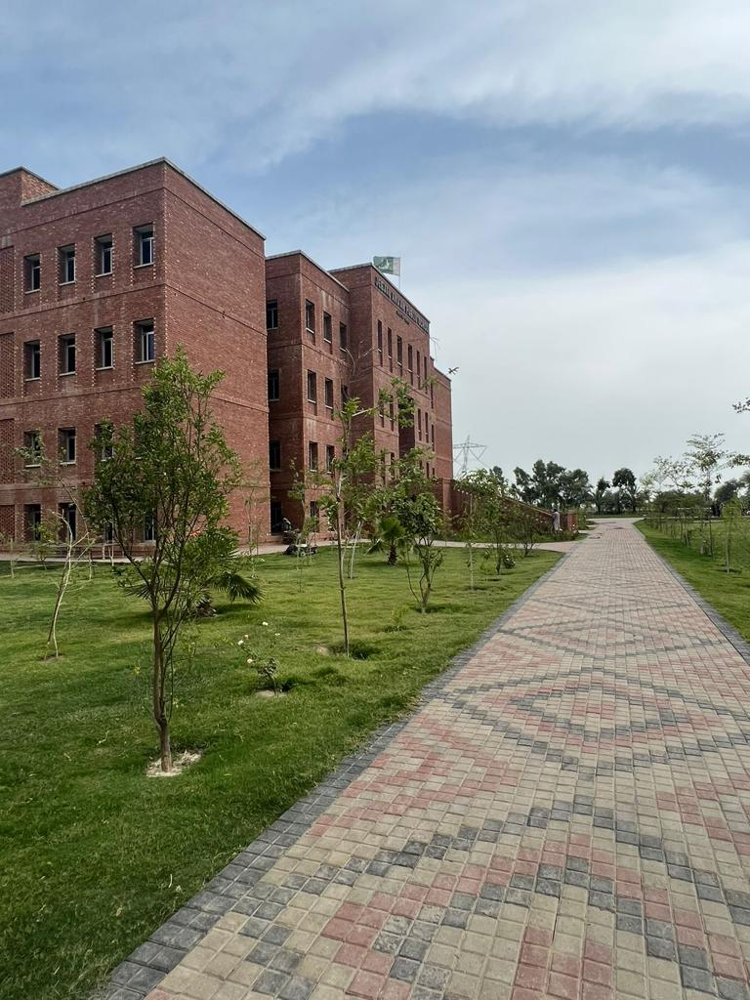
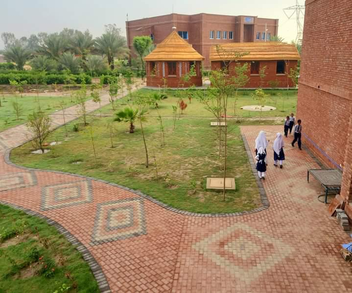
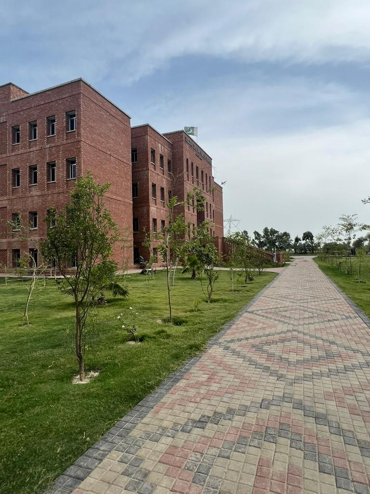
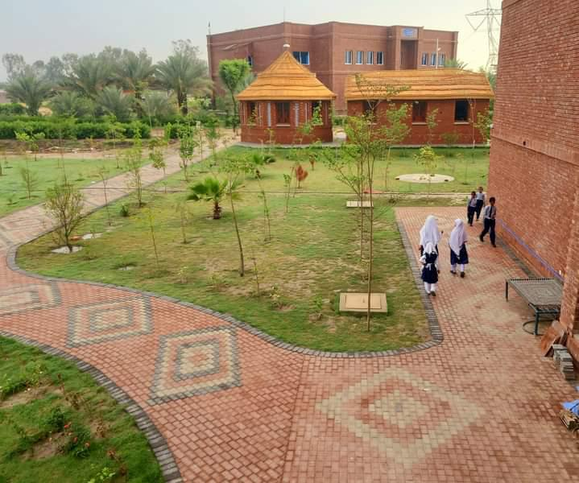

Welcome to Jeejal Amaan Public School Ghotki
Learn, Grow, Succeed
Our Features
- - Experienced Faculty
- - State-of-the-Art Infrastructure
- - Excellent Academic Record
- - A World Class Institution in the Remote Area of Ghotki
Learn, Grow, Succeed

In the early days of my journey, I, Manzoor Ahmed Soomro, established a small mosque for the village people, a place where Quran teaching classes were conducted. Occasionally, I would visit this institute to check on its progress and engage with the students. During one such visit, a question lingered in my mind as I spoke with the mosque’s Imam: what would become of our students after they graduated?
The response I received was a stark reminder of the challenges many faced.Some students found employment as teachers within the mosque, while others returned to their villages, their future prospects uncertain. It was evident that traditional Quranic education, while valuable, might not equip these children with the skills necessary for a brighter future.
Inspired by this realization, I embarked on a new endeavor. I transformed a two-story building, initially intended as a library, into a small school exclusively for the children enrolled in our mosque. However, as word spread, parents and children from neighboring villages expressed interest in enrolling in our institution.
Responding to this newfound demand, I envisioned something greater—a school that would provide quality education, empower young minds, and offer opportunities for a better tomorrow. Thus, within a year, the Jeejal Aman Public School came into existence, housed in a new four-story building equipped with state-of-the-art infrastructure.
This journey, from humble beginnings in a small mosque to the establishment of a thriving educational institution, is a testament to the power of vision, dedication, and community support. Today, Jeejal Aman Public School stands as a beacon of hope, offering top-notch education to underprivileged children and shaping future leaders and global citizens.
Driven by a deep sense of responsibility and a desire to uplift the entire community, I realized that our efforts should not be limited to educating the younger generation alone. There were adults within our community who, for various reasons, were unable to return to formal education. Recognizing this need, we embarked on a new initiative aimed at skill-building and vocational training.
Thus, the Jeejal Amaan Vocational Education Learning And Training Institute was born, offering a diverse range of vocational courses tailored to meet the needs of our community members. Our curriculum included Diploma in Information Technology (I.T), Excavator Operator, Hand Embroidery, Dress Making & Dress Designing, Motorcycle Mechanic, Solar & UPS Technician, Tractor Driver, Computerized Accounting, and General Electrician, among others.
Through this institute, we aimed to equip individuals with practical skills that would enable them to secure gainful employment, start their own businesses, or contribute meaningfully to their families and communities. By focusing on vocational education, we sought to empower individuals with the tools they needed to thrive in today's rapidly changing world.
Our commitment to education extended beyond the classroom walls, encompassing a holistic approach that addressed the diverse needs of our community members. Through the Jeejal Amaan Vocational Education Learning And Training Institute, we aimed to create opportunities for lifelong learning and personal growth, ensuring that individuals of all ages had the chance to realize their full potential and lead fulfilling lives.
Sincerely
Manzoor Ahmed Soomro,
Founder’s Chairman, EVE Foundation
 


